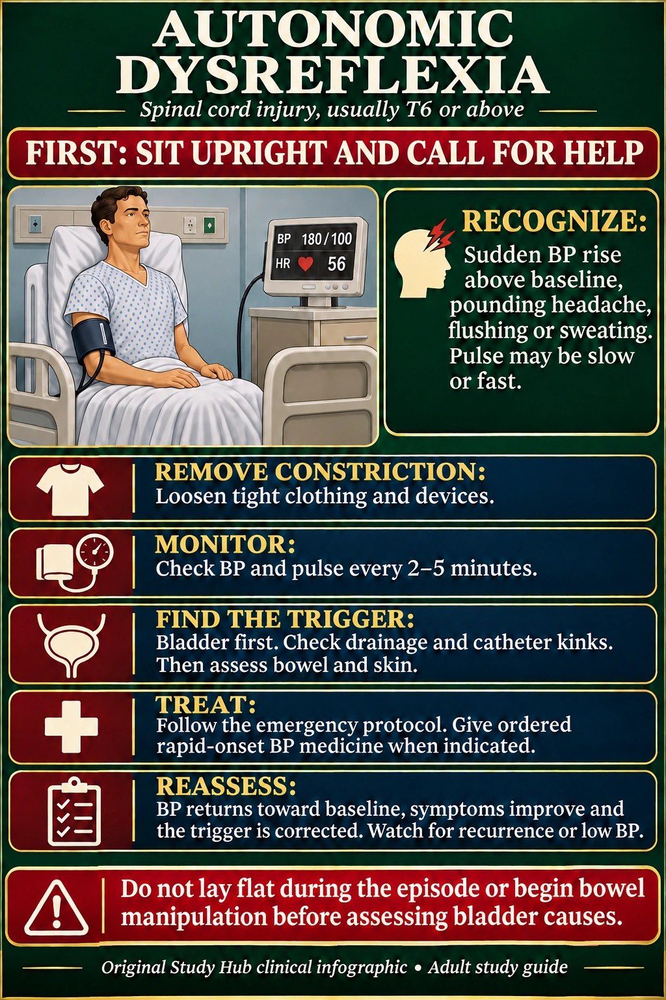

NUR 258 · Module 8 · Neurologic nursing
Autonomic dysreflexia: nursing actions
Recognize a sudden rise in blood pressure and respond urgently.
Sit upright and call for help. Loosen constriction and check the bladder first.

Nursing steps in readable text
Recognize
Usually associated with spinal cord injury at T6 or above. Compare blood pressure with the person’s usual baseline. A sudden rise may occur with pounding headache, flushing or sweating. Pulse can be slow or fast, and symptoms may be limited.
Act immediately
Sit the patient upright and obtain help. Loosen constrictive clothing or devices. Check blood pressure and pulse frequently, commonly every 2–5 minutes under the response protocol.
Find and treat the trigger
Start with bladder drainage and check catheter tubing for kinks or obstruction. Follow the ordered catheter protocol. Then assess bowel and skin causes. Bowel examination or manipulation can worsen AD and requires the appropriate protocol.
Treat persistent hypertension
Follow the emergency plan and administer the ordered rapid-onset antihypertensive when indicated. Continue urgent escalation if blood pressure remains elevated.
Evaluate outcomes
Blood pressure moves toward baseline, symptoms improve and the trigger is corrected. Continue monitoring for recurrence or hypotension after treatment.
Keep the original memory picture
The regular clinical infographic above gives the response steps. The original alarm-tower picture below remains available for recall.

Practice clinical judgment
A patient with a T4 injury develops a pounding headache and sudden hypertension. What comes first?
Show the answer
Sit upright, call for help, loosen constriction and monitor blood pressure. Investigate bladder causes first while following the emergency response plan.
Sources and original handouts
No exact topic-specific Simple Nursing handout was found in the site’s indexed Simple Nursing collection. Existing related handouts stay with their original lessons.
Clinical sources checked November 7, 2026. Use the assigned course material and individual clinical orders. Artwork is educational and does not specify a device’s technical fitting procedure.